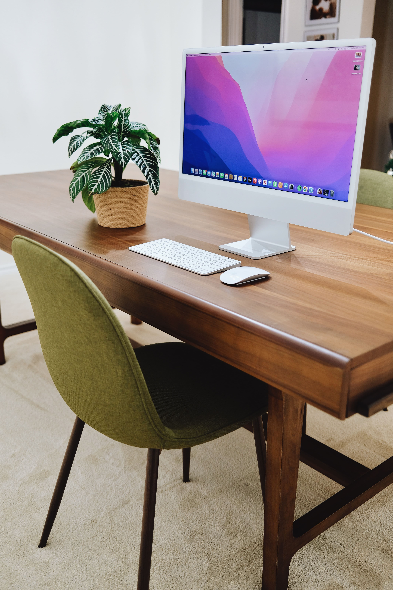
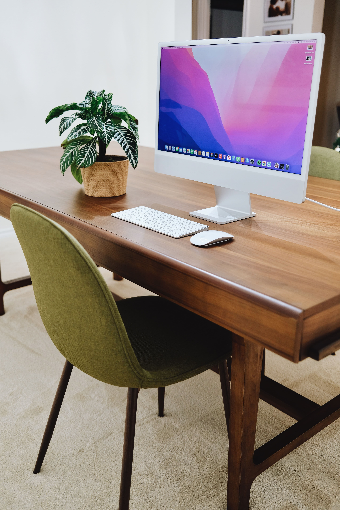

Captamos momentos maravillosas para todo tipo de Eventos
Comenzó su carrera en 2009 como fotógrafo de prensa en Argentina y a partir de 2015 eligió como base Bruselas, el centro institucional, cultural y empresarial de Europa. Desde entonces, y durante 6 años, colaboró con agencias internacionales de fotografía, como Reuters, Associated Press y Reporters, entre otras.
Su trabajo lo llevó a recorrer más de 20 países y a desarrollar una amplia gama de proyectos: reportes fotográficos para la prensa europea y estadounidense, fotógrafo oficial en misiones de Observación Electoral de la Unión Europea (Timor Oriental, Mali, Paraguay, Túnez, Sudán y Tanzania) y reportajes de turismo para revistas y agencias especializadas en este segmento.
En 2019 fundó en Bruselas su propia agencia de producción audiovisual especializada en fotografía, video y diseño gráfico. La empresa ha producido material para clientes como la Comisión Europea, Siemens, Procter & Gamble, Knauf Insulation, Mostra Communication, Partido Socialista Europeo, Der Spiegel, revista Geo, Stern, Financial Times, National Geographic, Volvo, Hard Rock Cafe, entre otros.
En paralelo a su actividad como fotógrafo corporativo Ezequiel ha creado una colección de fotografías “Fine Art”, producto de sus diferentes viajes. Parte de esta colección fue presentada en exposiciones individuales y colectivas en Argentina, Bélgica, Francia, Inglaterra, Hungría y Alemania.
Su amplia experiencia profesional, junto al dominio fluido del español, del francés y del inglés, le permite gestionar proyectos y relacionarse con clientes de todo el mundo.
Para contactar a Ezequiel Scagnetti puede llenar el formulario desplegado a continuación, escribir a jzapataft@gmail.com o bien llamar al
+54 9 555555555 (de lunes a viernes - 10h a 16h)


 
